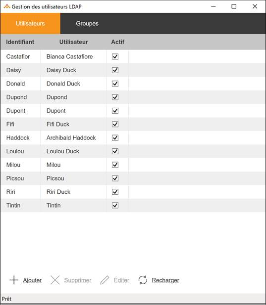
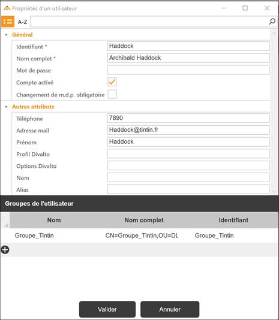
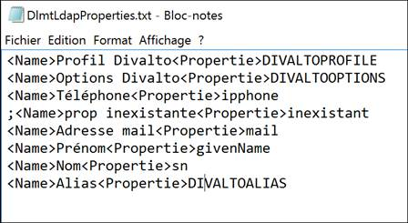

Accueil | DLMT - Gestion des licences nommées | Divalto Licences Management Tool (DLMT) | Gestion des utilisateurs de l’annuaire LDAP
Gestion des utilisateurs de l’annuaire LDAP
DLMT propose la gestion des utilisateurs et des groupes d’un annuaire
LDAP. Les opérations prises en compte sont l’ajout, la suppression et
la modification. L’utilisateur souhaitant effectuer ces opérations depuis
DLMT devra avoir les droits d’accès définis au niveau de l’annuaire.
Le choix « Gestion » affiche la liste des utilisateurs de
l’O.U. précisée comme filtre de base :

Les boutons d’action situés en bas de l’écran permettent de créer, supprimer
ou modifier un utilisateur, et de réactualiser la liste.

La fiche d’un utilisateur comporte trois parties :
- « Général » contient des
propriétés standard de l’annuaire. En particulier, on y trouve l’identifiant
de l’utilisateur qui lui servira à s’identifier lors de l’ouverture
de session ou de l’accès à l’ERP Divalto. C’est
cet identifiant qui sera associé aux profils ou aux options.
- « Autres attributs » comporte
une liste de propriétés paramétrables de l’annuaire LDAP que l’on
souhaite gérer avec DLMT. Cette liste est stockée dans le fichier
paramètre « DlmtLdapProperties.txt
» :

La balise <name> permet d’indiquer le libellé qui
apparaît dans le masque de saisie de l’utilisateur.
La balise <Propertie> contient le nom de la propriété
dans l’annuaire.
Un point-virgule en colonne 1 permet de mettre la propriété en commentaire.
Dans ce cas, elle n’apparaîtra plus dans l’interface de saisie.
Ces propriétés doivent préexister dans l’annuaire LDAP. Les propriétés
spécifiques comme DIVALTOPROFILE, DIVALTOOPTIONS ou DIVALTOALIAS devront
être ajoutées dans l’annuaire LDAP par son administrateur.
- « Groupes de l’utilisateur
» permet d’associer l’utilisateur à des groupes.
·